大语言模型
AI 4.0：从文本向量到 GPT，
机器如何学会“说人话、做人事”
一位 Google 工程师说：
LaMDA 有意识了
Blake Lemoine 公开了与 LaMDA 的对话记录。Google 公开否认，并终止了他的雇佣。
一个问题，贯穿这一讲
只会“预测下一个词”的程序，凭什么让人觉得它在思考？
从一家非营利实验室，到 12 亿周活的产品
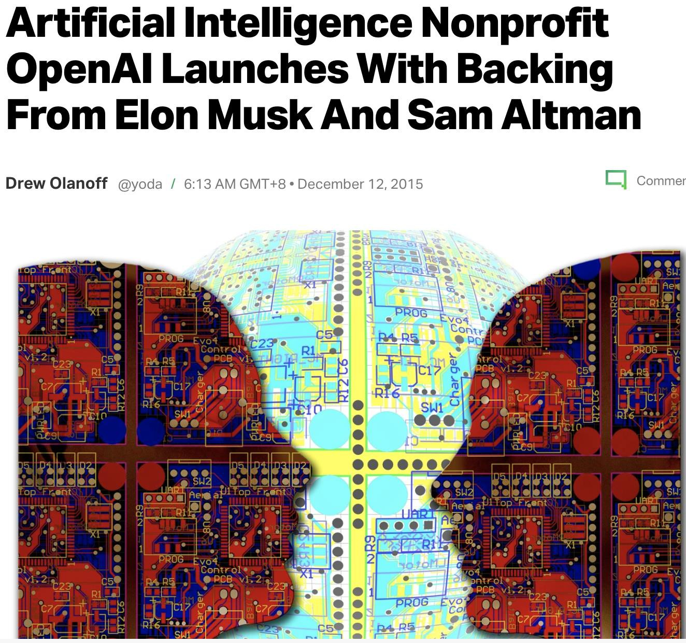
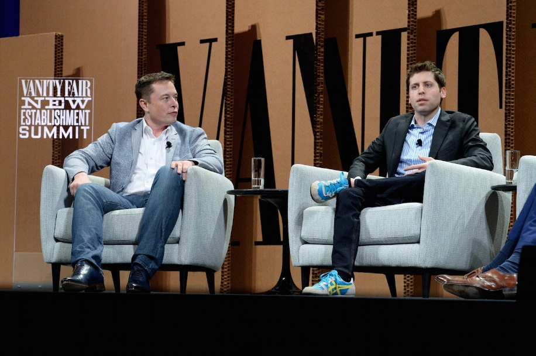
（OpenAI 自报，2026-09）
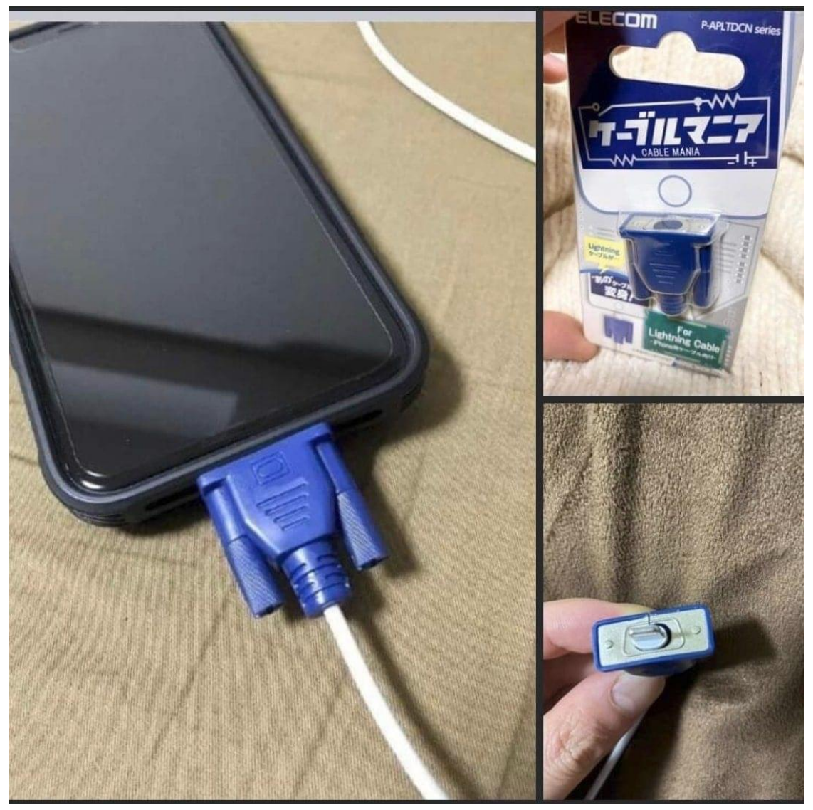
这张图片有什么有趣的地方？请逐个面板描述。
三个面板：① 手机充电口插着大号 VGA 接头；② “Lightning”包装盒上印着 VGA 图；③ VGA 接头末端是小小的 Lightning 插头。幽默来自“大而过时”与“小而现代”的荒谬反差。
它没有被“教”过这个笑话。同一个模型，在没有专门训练的任务上泛化。这正是本讲要解释的。
三个问题，一条主线
机器如何
理解文本？
词 → 向量
one-hot · BoW · Word2Vec
RNN · LSTM · Transformer
GPT 是
怎样炼成的？
注意力 · 预训练 · 微调
ICL · CoT · RLHF
2022–2026 的演进
人们怎样
使用大模型？
12 亿周活的数据
三件事：指导 · 信息 · 写作
How to use?
本讲在课程中的位置：AI 4.0 · 预训练大模型（L7.2 接续：提示词工程与智能体）
自然语言处理
人类怎样“理解”一段文本？
文本数据先要“洗干净”再变成数字
模型看不到“字”，只看到 Token ID
One-hot：每个词一个开关
词表 = {the, cat, mat, sat, on}。选择两个词，比较它们的向量。
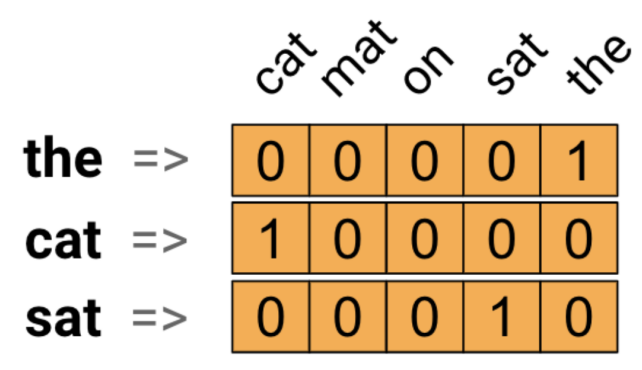
任何两个不同的词，向量都正交：“cat”与“mat”的距离，和“cat”与“economy”一样远。意义丢失了。
词袋（BoW）：数词频，算夹角
Word2Vec：king − man + woman ≈ queen
词被映射为稠密向量：意义相近的词在空间里靠得近，语义关系变成向量运算。
没有空格的中文：切在哪里，意思就完全不同
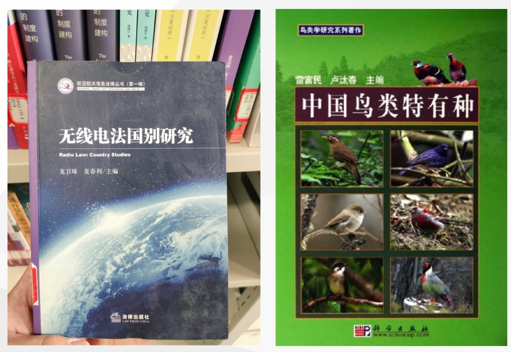
《无线电法国别研究》（学科书名）
也可切成：无线电 / 法国 / 别研究 → 像一句俏皮话。
《中国鸟类特有种》（科学书名）
口语里「特有种」↔「特有种」（特别有种）——同音让机器更难对齐语义。
应对中文 NLP：分词 / 子词 Token、上下文消歧、大规模语料——Word2Vec 之后的 RNN / Transformer 也仍要面对这些“表层”困难。
RNN：一个词一个词地读
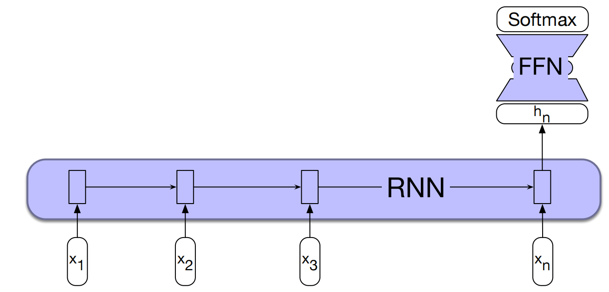
点击“逐词播放”：隐藏状态 h 随每个词更新，读完后据此分类。
LSTM：三个门控制记忆
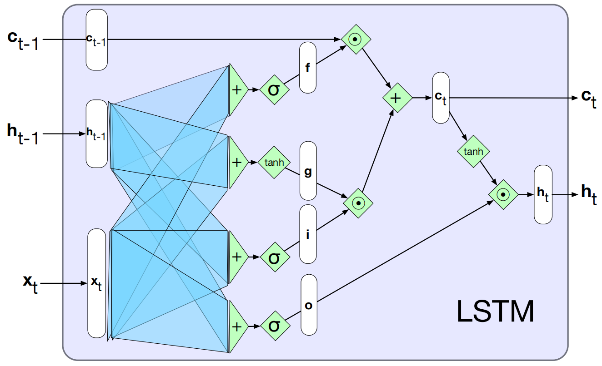
ct = ft ⊙ ct−1 + it ⊙ gt ht = ot ⊙ tanh(ct)
RNN 相当于 f≈0.8 且无法调节；LSTM 可学出 f≈1，让早期信息跨越很长距离。
机器翻译：编码器 → 解码器
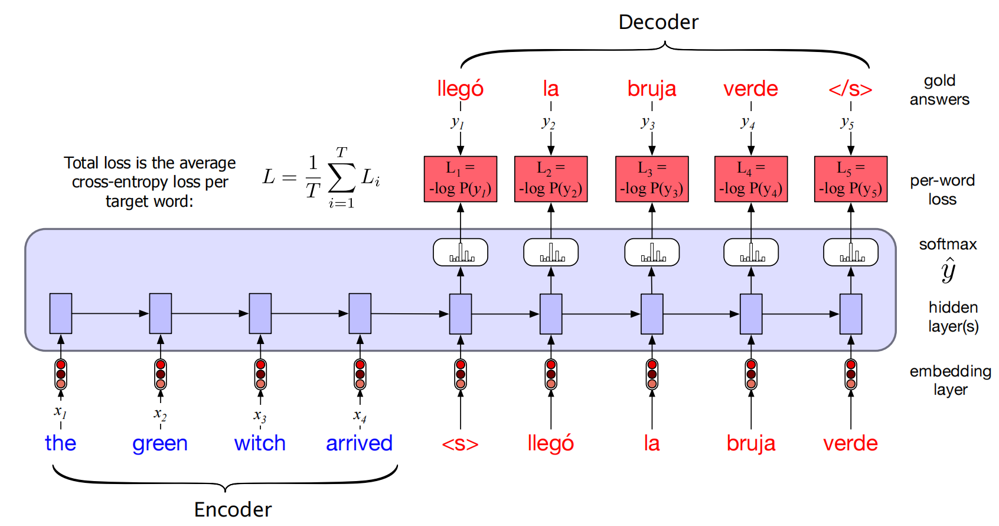
整句话被压成一个向量再解码：句子越长，越难；而且必须串行计算。
示意：按序列依赖的步数计；实际计算量与硬件相关，自注意力的代价随 n² 增长。
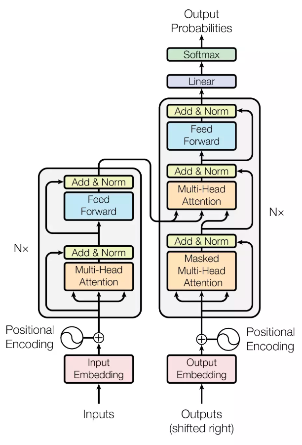
不再“循环”，
只用注意力
此后一切大语言模型——BERT、GPT、Claude、Gemini、DeepSeek——都建立在这个结构之上 ⚠
大语言模型
同一个 Transformer，两种读法
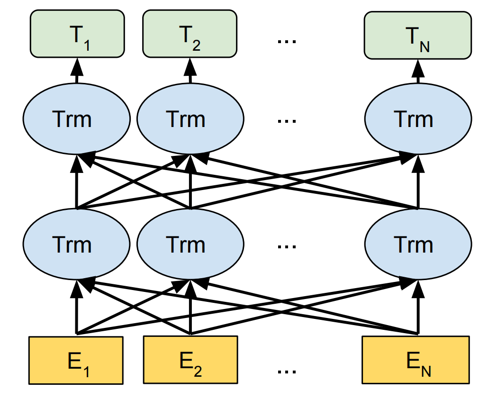
参数量：两年（2018→2020）涨了 3 个数量级
同一个词，由上下文决定意义
“注意力”= 当前词对其他词分配权重，再据此重新表示自己：词向量不再固定，而是随上下文变化。
注意力：新表示 = 权重 × 旧表示
加上可学习参数：Q、K、V
可学习：Y = Softmax( QKᵀ / √dk ) V
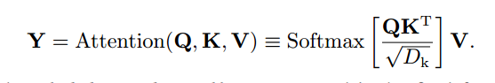
Query：我在找什么 Key：我能提供什么标签 Value：我真正携带的内容
每一层都一样：注意力 + 前馈
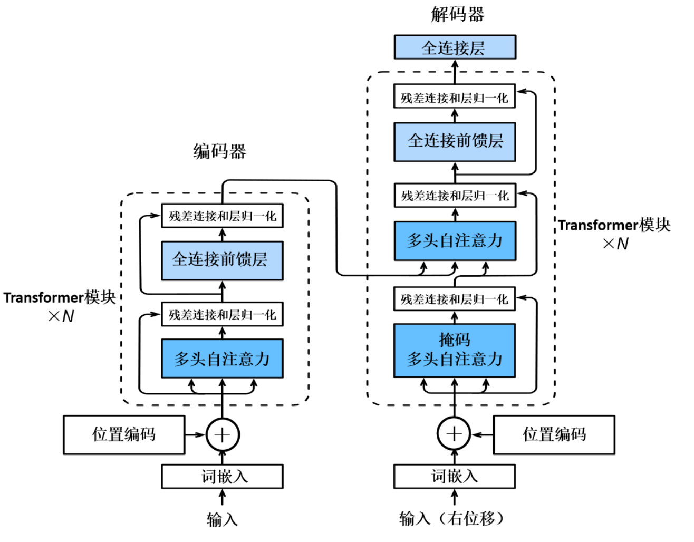
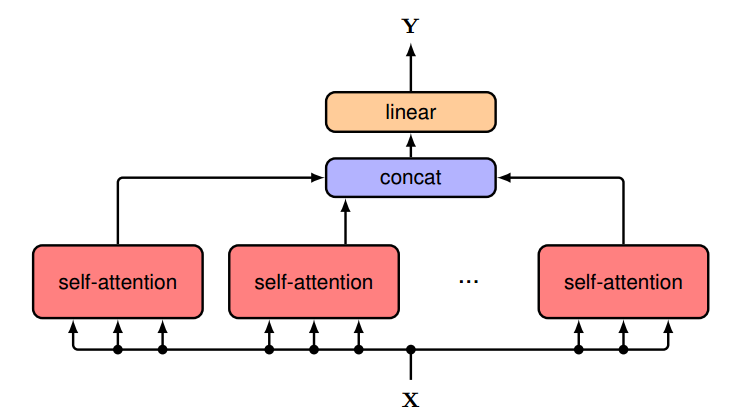
GPT = Generative Pre-trained Transformer
Alec Radford：GPT 系列主要作者，DCGAN 一作，PPO 作者之一。
Ilya Sutskever：AlexNet 作者之一，OpenAI 联合创始人、时任首席科学家（2024 年离开）。
预训练：读一段，猜下一个词
微调：一个模型，四种输入格式
不同 NLP 子任务被抽象成同一种“序列 + 特殊符号”，只需在 Transformer 顶端加一个线性层。
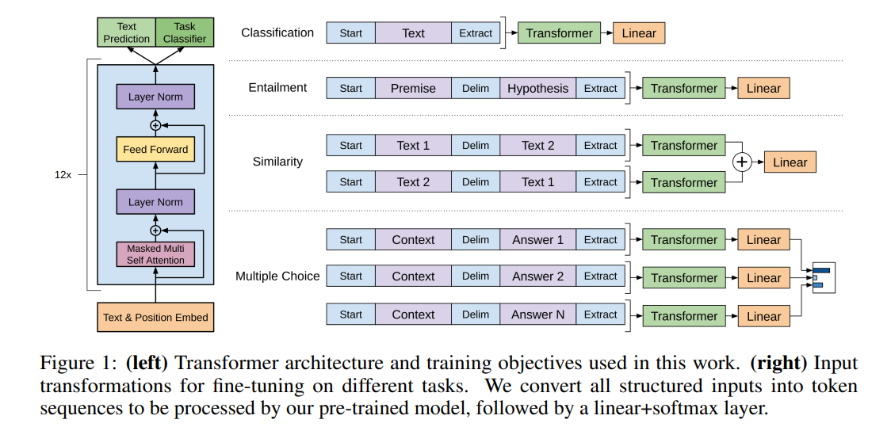
GPT-2：不再微调，直接“问”
它并没有在监督任务上决定性地打败 BERT；于是换了赛道：强调“无需微调”的零样本，在 8 个语言建模数据集中的 7 个取得当时最佳。
回到本质：
把模型做大
不再追求每项任务的最优，而是看少量示例下的通用能力——上下文学习（In-Context Learning）。
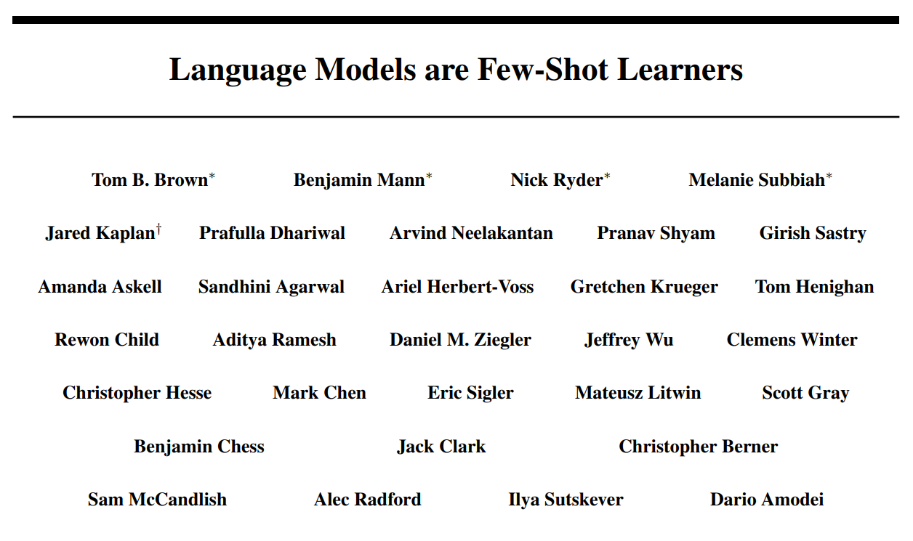
示例越多，任务越清楚
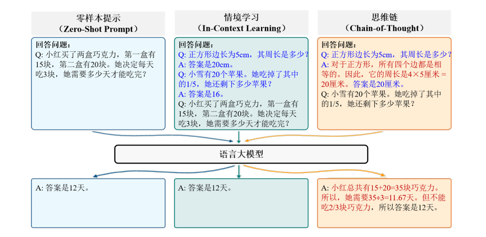
按传统定义，上下文学习中的 one-shot / few-shot 仍属“零梯度更新”：学习发生在推理时的提示里，而不是训练时的权重里。
思维链：把推理写出来
原稿写“大小模型的分界线：10B”。Wei et al. 2022 的结论是：思维链对小于约 10B 的模型多半有害，约 100B 量级才稳定受益。2024 年后的推理模型把思维链训练进了模型（见 2.6）。
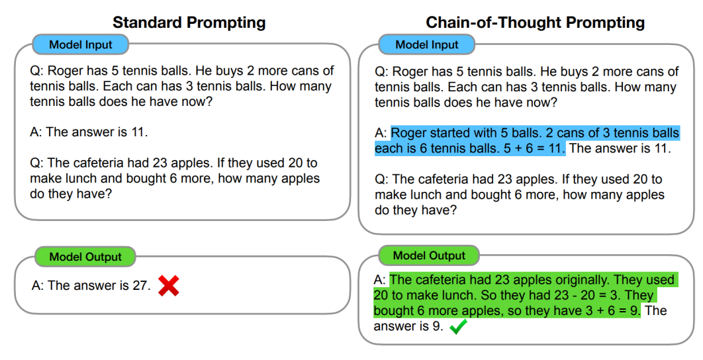
让模型听得懂人话：InstructGPT
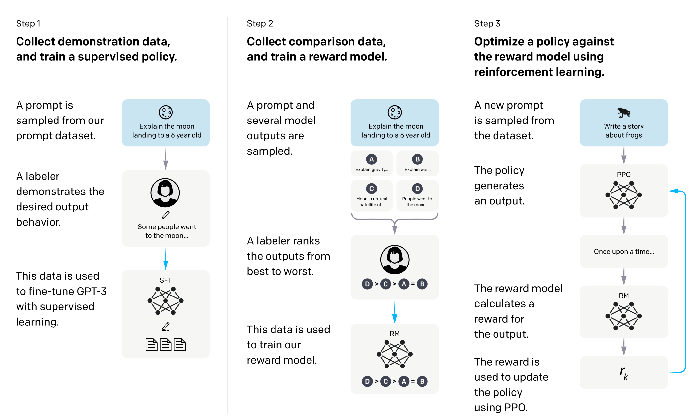
人类偏好 → 奖励信号
预训练 → 微调 → 对齐：说人话、做人事
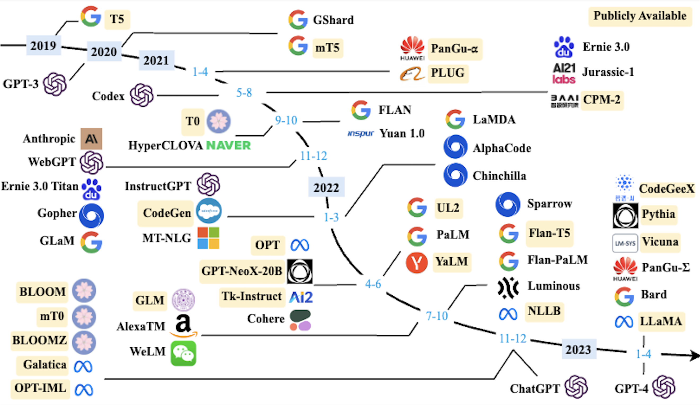
ChatGPT
OpenAI 称它是 InstructGPT 的“姊妹模型”，以对话形式开放。
GPT-4
接受图像 + 文本；规模、数据、架构均未公布——开启了“前沿模型不再公开细节”的时代。
它到底会什么？
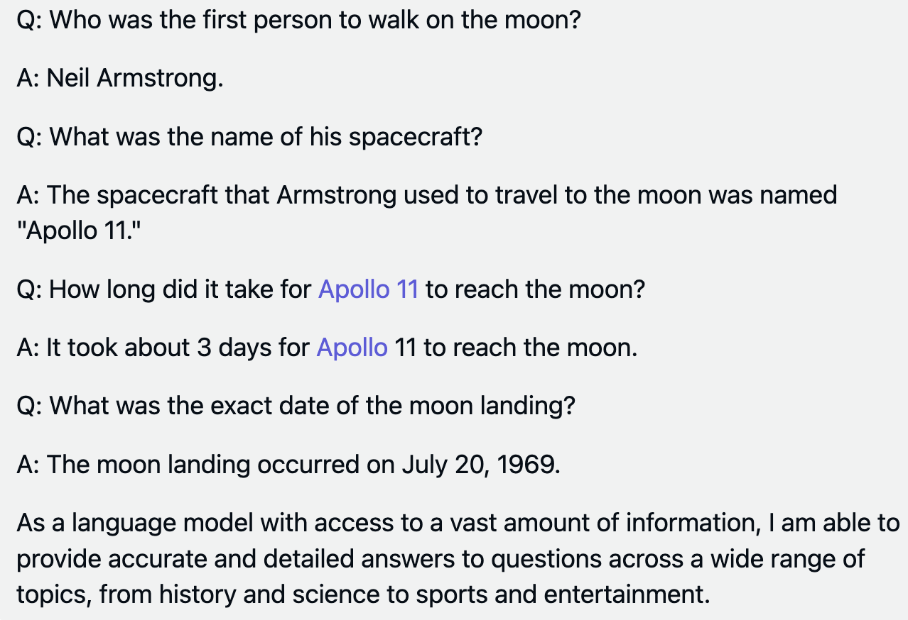
每一种能力，对应一个训练环节
| 能力 | 主要来源 | 可信度 |
|---|---|---|
| 世界知识 · 上下文学习 · 语言生成 | 预训练；存储知识依赖海量参数（GPT-3：1750 亿） | 共识 |
| 遵循指令、泛化到新任务 | 指令微调：指令的种类与数量越多越好 | 共识 |
| 复杂推理 | 很可能来自代码训练；后来被思维链与强化学习进一步强化 | ⚠ 2022 年的推测 |
| 中立、客观、安全、详实的回答 | 与人类对齐：SFT 或 RLHF | 共识 |
| 多轮对话 | RLHF（ChatGPT）：建模对话历史、增加信息量、拒绝知识外的问题 | 共识 |
对齐会让模型在部分任务上的性能低于未对齐的版本；原稿还提到 ChatGPT 为对话牺牲了部分上下文学习能力。InstructGPT 论文用混入预训练梯度（PPO-ptx）来缓解。
GPT 之后：四年，四条赛道
思维链从“提示技巧”变成训练目标
2024-09 OpenAI o1：用强化学习训练模型生成长思维链；性能随训练算力与思考时间（推理算力）同时提升。2025-01 DeepSeek-R1 以开源方式复现这一路线。
让模型独立解 n 次，取多数答案。若单次正确率为 p，且错误答案互不一致，n 越大越准——这就是“思考更久”的统计直觉。
更大，但不更贵：稀疏激活
把前馈层拆成多个“专家”，路由器为每个 token 只挑 k 个。点击一个词，看哪些专家被激活。
Qwen3.8 MoE
总参数约 2.4T，每 token 激活约 95B（≈4%）。
Kimi K3
2.8T 参数、原生视觉、1M 上下文。
大语言模型使用
原稿：7 亿周活。一年后：12 亿
7 亿用户、每周约 180 亿条消息，约占全球成年人口的 10%。
1.2B 周活；语音 2.5 亿周活；每周 15 亿张图片；检索量约为 Google 的 1/5（OpenAI 自己的未公开估计）。
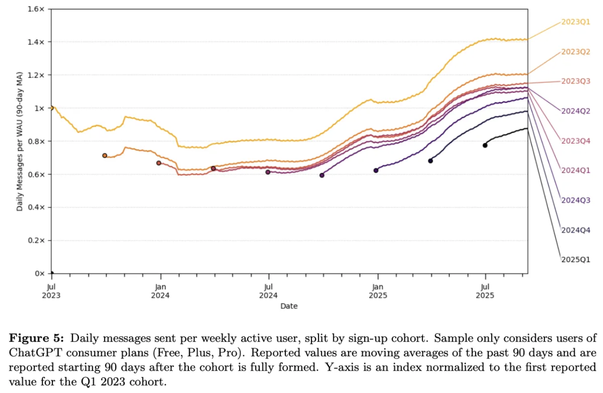
用户黏性很强
图：按注册季度分组，每个周活用户每天发送的消息数（以 2023Q1 队列的初始值为 1×）。
① 早期用户最黏：2023Q1 队列约 1.4×。
② 2025 年起，所有队列的人均使用强度同步上升。
③ 新注册的队列起点更低，但同样随时间爬升。
三件事占了近 80%：指导、信息、写作
“实用指导”中，辅导 / 教学（Tutoring or Teaching）占全部消息的 10.2%——学习与辅导是一类重要的日常用途。
多数使用其实发生在工作之外
2024-06
工作使用在增长，但生活使用增长得更快。对管理者：员工早已在用，问题是如何把个人习惯转化为组织能力。
好提示 = 把上下文给足
基于本讲原理：模型靠提示中的上下文决定输出。逐项打开，看提示如何变“完整”。
一条链：文本 → 向量 → 注意力 → 对齐
词 → 向量
one-hot → BoW → Word2Vec：从“符号”到“几何”
注意力
Transformer：并行、任意两词一步可达
预测下一词
自监督；GPT-1→3：越大越通用
ICL · CoT
不改权重，靠提示里的例子与推理
SFT · RLHF
说人话、做人事；有对齐税
先想后答
强化学习 + 推理算力（2024→）
① 模型的能力来自数据 + 规模 + 对齐，不是魔法；② 前沿模型的细节正变得不透明；③ 12 亿人已在用——瓶颈在组织，不在技术。
回到开头：它真的“理解”吗？
只做“预测下一个词”的模型，为什么能完成翻译、写代码、看图说笑话？你认为这是“理解”吗？
你所在行业中，哪些工作的 主要产出是文本？按 NBER 的发现，写作在工作使用中占 40%——它对你的组织意味着什么？
前沿模型不再公布规模与数据，对企业采购与风险管理有什么影响？对齐税与安全边界如何权衡？
课后：用本讲的“提示词构建器”改写你日常的一个工作提示，比较输出差异。下一讲 L7.2：提示词工程与智能体。
参考文献 R1–R16
R1 OpenAI ChatGPT 周活公告：TechCrunch《ChatGPT reaches 900M weekly active users》2026-02-27 — techcrunch.com/2026/02/27/chatgpt-reaches-900m-weekly-active-users/；The Verge《ChatGPT now has 1.2 billion weekly users》2026-09-29 — theverge.com/ai-artificial-intelligence/1002265/；McGrath 公告汇总（2023-11 至 2026-02）；DailyMech 转述 Big Technology 采访，2026-11-04（语音 / 图像 / 检索量，⚠ 自报）
R2 本项目 L1 调研：HTMLSlides/L1/Research_2026.md（OpenAI / Anthropic / Google 2026 时间线，截至 2026-11-14，其 R13–R16、R28–R29 等一手与二手来源）
R3 OpenAI: GPT-4, 2023-03-14 — openai.com/index/gpt-4-research/
R4 Mikolov et al., Efficient Estimation of Word Representations in Vector Space, ICLR 2013 — arxiv.org/abs/1301.3781
R5 Vaswani et al., Attention Is All You Need, NeurIPS 2017 — arxiv.org/abs/1706.03762
R6 Stanford HAI: 2026 AI Index Report — hai.stanford.edu/ai-index/2026-ai-index-report
R7 本项目 L1 调研 §3.2（中国开放权重模型：DeepSeek-V4、Kimi K3、Qwen3.8、GLM-5.3；来源为二手聚合页，⚠ 未逐条核对）
R8 OpenAI: Aligning language models to follow instructions (InstructGPT), 2022-01-27 — openai.com/index/instruction-following/
R9 Radford et al., Improving Language Understanding by Generative Pre-Training (GPT-1), 2018
R10 Radford et al., Language Models are Unsupervised Multitask Learners (GPT-2), 2019 — cdn.openai.com/better-language-models/language_models_are_unsupervised_multitask_learners.pdf
R11 Brown et al., Language Models are Few-Shot Learners (GPT-3), NeurIPS 2020 — arxiv.org/abs/2005.14165
R12 Wei et al., Chain-of-Thought Prompting Elicits Reasoning in Large Language Models, NeurIPS 2022 — arxiv.org/abs/2201.11903
R13 Ouyang et al., Training language models to follow instructions with human feedback, 2022 — arxiv.org/abs/2203.02155
R14 OpenAI: Learning to reason with LLMs（o1），2024-09-12 — openai.com/index/learning-to-reason-with-llms/；DeepSeek-R1 Release，2025-01-20 — deepseek.com/en/news/deepseek-r1/；Wang et al., Self-Consistency Improves Chain of Thought Reasoning, 2022 — arxiv.org/abs/2203.11171
R15 Shazeer et al., Outrageously Large Neural Networks: The Sparsely-Gated Mixture-of-Experts Layer, 2017 — arxiv.org/abs/1701.06538
R16 Chatterji, Cunningham, Deming, Hitzig, Ong, Shan, Wadman: How People Use ChatGPT, NBER Working Paper 34255, 2025-09 — nber.org/papers/w34255
P 原 PPT：Materials/Lecture_7.1_GPT.pptx（图片多来自原稿或原论文，来源见各页）